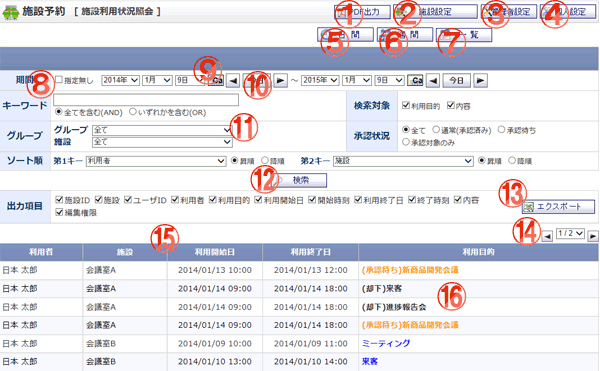

施設利用状況の検索、csv形式でエクスポートをする画面です。

機能説明
PDF出力ボタン表示画面のPDF出力を行います。 |
施設設定ボタン施設グループ情報設定画面へ遷移します。 |
|---|---|
管理者設定ボタン管理者設定メニュー画面へ遷移します。 |
個人設定ボタン個人設定メニュー画面へ遷移します。 |
日間ボタン施設予約一覧 日間画面へ遷移します。 |
週間ボタン施設予約一覧 週間画面へ遷移します。 |
一覧ボタン施設利用状況照会画面へ遷移します。 |
期間指定無しチェックチェックを付けると期間が選択不可になります。チェックを外すと期間が選択可になります。 |
カレンダーボタンポップアップでカレンダー画面が開きます。カレンダー画面で日付をクリックすると、クリックした日付がセットされます。 |
前日・今日・翌日ボタン年・月・日コンボを切り替えます。 |
施設グループコンボ登録されている施設グループの一覧が表示されます。このコンボで選択した施設グループを元に、所属している施設のコンボが生成されます。 |
検索ボタン入力した条件で検索を実行します。入力内容に不備がある場合エラーメッセージが表示されます。 |
検索結果エクスポートボタン表示されている検索結果をcsvファイルでダウンロードできます。 |
ページコンボ・前頁・次頁ページコンボで任意のページへ、前頁アイコンクリックで前のページへ、次頁アイコンクリックで次のページへそれぞれ遷移します。 |
ヘッダタイトルクリックによって一覧のソート条件の切り替えを行います。現在ソート条件になっている項目をもう１度クリックすると「昇順」「降順」が切り替わります。 |
利用目的施設予約確認画面をポップアップで表示します。 |
表示・入力項目説明
期間
検索条件の期間、開始年月日と終了年月日を選択します。
キーワード
検索するキーワードを入力します。
検索対象
キーワード検索の範囲を選択します。
グループ
施設グループ・施設を選択します。
施設グループコンボで選択されている施設グループにより、施設コンボが生成されます。
承認状況
承認状況を選択します。
ソート順
第1キーと、第2キーを指定できます。それぞれのソート順について、昇順、降順の設定ができます。
検索結果のタイトルと連動しています。
施設利用状況検索結果
利用者名、施設名、利用開始日、利用終了日、利用目的が表示されます。